Somos una compañía dedicada a la gestión de consumos de energía a través de la planeación, implementación y gerenciamiento de sistemas eléctricos industriales en función de maximizar la rentabilidad y eficiencia de las compañías.
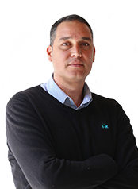
Juan Felipe
Betancur
Manager general
Ingeniero electricista, especialista en gerencia de marketing y MBA con énfasis en finanzas, su amplia formación académica y trayectoria laboral han permitido liderar la empresa guiándola para su desarrollo, transformación y crecimiento.
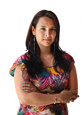
Andrea Catalina
Buitrago
Directora
Comercial
Ingeniera de control y especialista en gerencia demercadeo, con amplios conocimientos en el sector eléctrico y experiencia laboral en temas comerciales y administrativos le permiten dirigir el departamento comercial planificando, ejecutando y haciendo
seguimiento de las actividades del área que lidera.
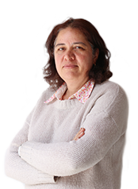
Olga María
Betancur
Directora
Operativa
Arquitecta urbanista, con experiencia laboral de 25 años que le ha permitido tener conocimiento técnico y administrativo enfocado en proyectos; generando valor desde el inicio, la ejecución y la finalización de los mismos.
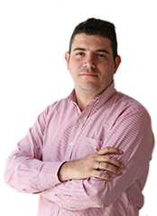
Diego Alejandro
Giraldo
Ingeniero de Proyectos Servicios Técnicos
Ingeniero de control, durante su recorrido profesional se ha desempeñado en administración, asesoría y montaje de proyectos eléctricos, de automatización y control. Esta experiencia le permite portar un amplio conocimiento a los procesos de la compañía.
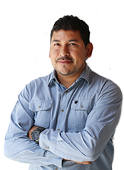
Oscar
Cañas
Ingeniero
Director DRIVE'S
Ingeniero electricista, su amplia experiencia en implementación, coordinación, supervisión de redes y subestaciones eléctricas, han generado conocimiento y desarrollado capacidades que le permiten liderar el Departamento de Drive`s generando crecimiento
y solidez.
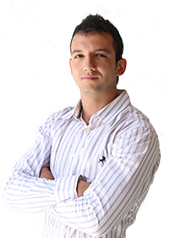
Jorge Luis
Henao
Ingeniero
Gestión de Energía
Ingeniero electricista, su experiencia en áreas de gestión de energía eléctrica le permiten llevar a cabo acciones efectivas encaminadas al crecimiento de la compañía.n amplios conocimientos en el sector eléctrico y experiencia laboral en temas comerciales
y administrativos le permiten dirigir el departamento comercial planificando, ejecutando y haciendo seguimiento de las actividades del área que lidera.
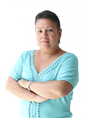
Orlindes
Orlindes
Coordinadora
Administrativa
Auxiliar contable, su recorrido profesional en áreas contables y administrativas del sector comercial e industrial, le permiten generar aportes que fortalecen el área; creando confianza y seguridad en los datos suministrados.
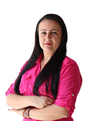
Andrea
Rios
Asistente de Gestión humana
Tecnóloga en gestión del talento humano, su conocimiento actualizado en administración del recurso humano permite establecer planes y programas que generen eficiencia operativa y aporten a los procesos de gestión de calidad.
Andrés Felipe
Hernández
Ingeniero
Eléctrico
Ingeniero eléctrico y electrónico, sus conocimientos en automatización de sistemas industriales, mercados de energía y diseño de sistemas eléctricos, le permiten generar soluciones rápidas y eficientes que aporten valor a la compañía.
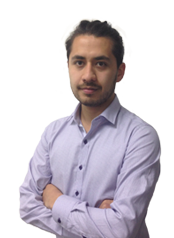
Ricardo
Sánchez
Ingeniero
Eléctrico
Ingeniero eléctrico y electrónico,sus intereses en áreas de control, automatización, diseño de proyectos en distribución y transmisión; generan aportes para cada uno de los proyectos que se llevan a cabo.
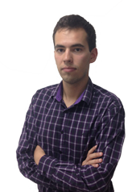
Nicolás
García
Ingeniero
Eléctrico
Ingeniero eléctrico y electrónico, su competencia en el diagnóstico económico, social y de factibilidad de proyectos permiten que estos sean desarrollados de una manera objetiva y funcional.
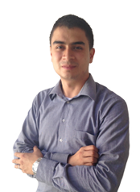
Angel Arturo
Cuadros
Ingeniero
Eléctrico
Ingeniero electricista, con experiencia en proyectos de protección eléctrica y eficiencia energética que permiten generar aportes a su rol de ingeniero de especificaciones y soporte técnico.
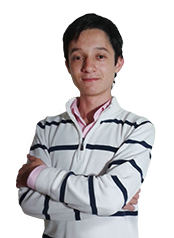
Duvan Stevens
Castaño
Ingeniero
Eléctrico
Ingeniero industrial con énfasis en procesos industriales, dispuesto al aprendizaje constante de los procedimientos que se realizan al interior de la empresa y a partir de este genera alternativas que lleven al mejoramiento continuo.
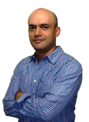
Helder
Morales
Ingeniero
Eléctrico
Ingeniero electricista con diplomado en RTEI 2013, su experiencia en redes de distribución urbanas, proyectos de electrificación rural, diseño de redes e iluminación; generan soluciones constantes que aportan los proyectos ejecutados por la compañía.
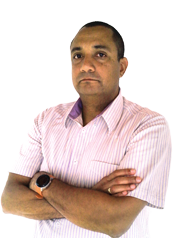
Marco Antonio
Quintana
Director de Diseño Especialidad: Cableado estructurado
Ingeniero electrónico, especialista en telecomunicaciones y gerencia de proyectos, certificado en PMP. Su recorrido académico y su amplia experiencia en el área telecomunicaciones generan aportes a los distintos procesos que lleva a cabo dentro de la
compañía.
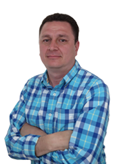
René Alejandro
Rivera
Director de Diseño Especialidad: Hospitalario
Ingeniero electricista, su conocimiento y experiencia en ingeniería de diseño le permiten agregar valor a los proyectos ejecutados, garantizando el cumplimiento del reglamento RETIE y de normas nacionales e internacionales.
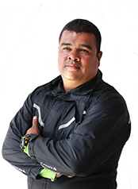
Carlos
Hernández
Logística
Su experiencia y amplio conocimiento en distribución y logística aportan eficiencia y competencia al desarrollo de los procesos de la compañía.